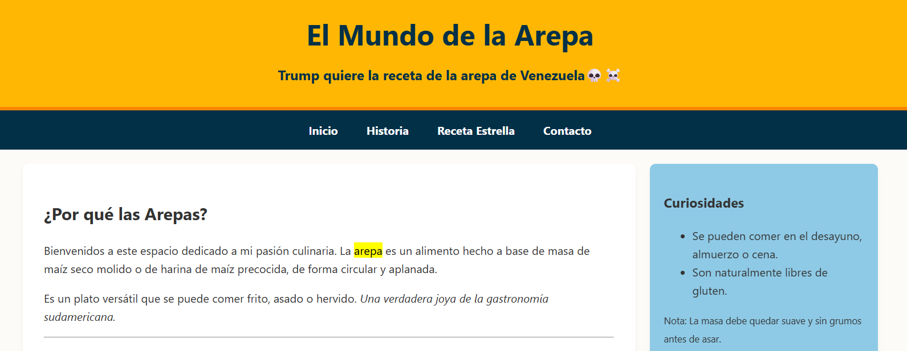

Proyecto Unidad 2
Diseñar y desarrollar un sitio web estático, personal y creativo sobre una temática de tu interés, aplicando correctamente los elementos básicos de HTML5 y CSS3.
HTML
CSS
Ver proyecto